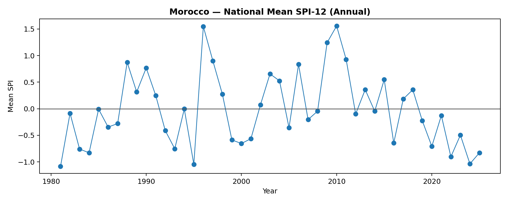
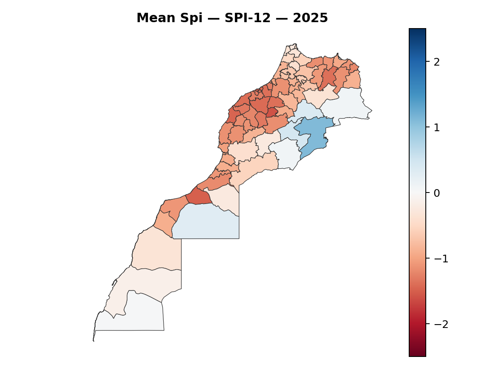
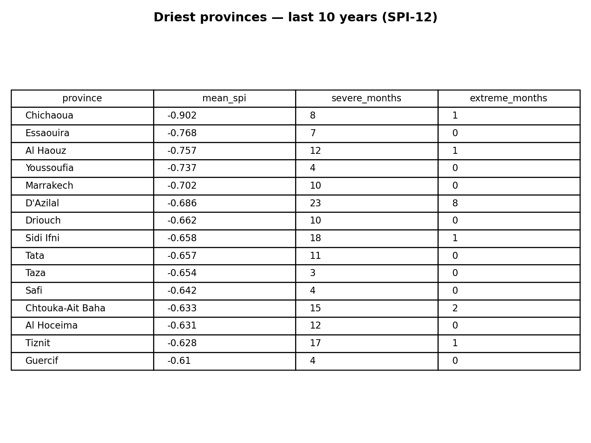

Trend slope: -0.0006 SPI units per year (national mean)

National mean SPI-12 (annual). Dashed line at 0 (near normal).

Provincial map — mean spi (SPI-12) for 2025.

Top driest provinces in the last 10 years — lower mean SPI and higher severe/extreme counts indicate worse drought conditions.
Key observations
Worst (driest) national years (SPI-12):
1981 (-1.09)1995 (-1.05)2024 (-1.04)2022 (-0.90)2025 (-0.83)
Best (wettest) national years (SPI-12):
2010 (1.56)1996 (1.55)2009 (1.24)2011 (0.93)1997 (0.90)
All figures and tables are generated programmatically from the processed SPI datasets. See repository for methodology and code.
Report built from: provincial_drought_stats.csv, provincial_spi_classes.csv